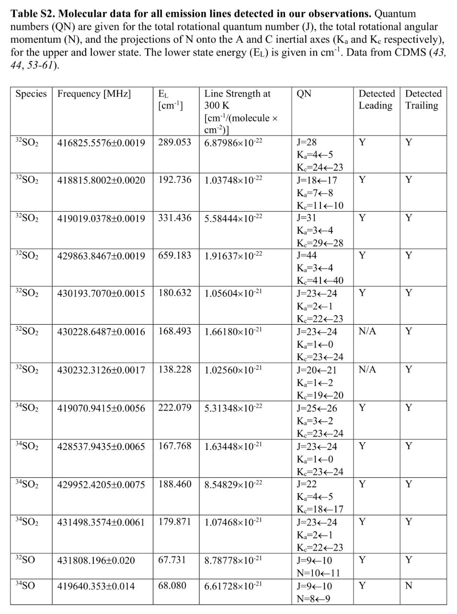

В нашем Telegram канале больше научных новостей, а также интересные обсуждения в комментариях, уважительная атмосфера общения.
3 Мая 2024


Раскрыта причина загрязнения белых карликов металлами и рассчитано поведение окружающих их объектов во время и после образования этих звёздных остатков.
Присутствие элементов из тяжелых металлов, таких как кремний, магний и кальций, на поверхности многих из этих компактных объектов было ошеломляющим открытием, которое противоречило предыдущим представлениям учёных.
Используя компьютерное моделирование, учёные смоделировали - как происходит резкое изменение движения белого карлика во время начала его формирования, вызванное асимметричной потерей массы при сбросе звёздной оболочки и коллапсе остатков звезды, что приводит к резкому изменению его положения и резкому изменению динамики орбит окружающего его вещества.
Во время 80% запусков симуляции учёные наблюдали, что после этого начального резкого изменения положения белого карлика - орбиты комет и астероидов в диапазоне от 30 до 240 а.е. от белого карлика, что соответствует расстоянию от Солнца до Нептуна и ещё дальше, стали вытянутыми. Кроме того, около 40% впоследствии упавших на карлик планетезималей прилетали с противоположно вращающихся - ретроградных орбит.
Затем учёные продолжили во времени симуляции, чтобы изучить динамику белого карлика спустя 100 миллионов лет. Они обнаружили, что ближайшие к белому карлику планетезимали по-прежнему имеют вытянутые орбиты и движутся как единое целое. И это опять стало новым открытием в астрономии.
Результаты симуляции объясняли почему тяжелые металлы постоянно обнаруживаются на поверхности белых карликов - из-за того, что они постоянно поглощают окружающие их более мелкие объекты. Это открытие раскрывает новую информацию об образовании белых карликов, что важно для понимания того, как звёздные системы изменяются на протяжении миллионов лет, и помогает пролить свет на будущую эволюцию нашей солнечной системы.
2 Мая 2024


30 Апреля 2024
Ученые НАСА приступают к исследованию солнечных бурь на Марсе.
Магнитное поле Земли и её атмосфера неплохо защищают нашу родную планету от воздействия этих бурь. Но Марс давно утратил своё глобальное магнитное поле и его атмосфера сильно разрежена. Насколько сильно проявляется солнечная активность на Марсе? Учёные надеются, что текущий солнечный максимум даст им шанс выяснить это. Прежде чем отправлять туда людей необходимо определить какая радиационная защиты понадобится космонавтам.
Данные детектора радиации Curiosity уже помогли ученым понять - как интенсивно радиация разрушает молекулы на основе углерода на поверхности Марса, что дало НАСА представление о том - на какую защиту от радиации могут рассчитывать астронавты, используя для защиты пещеры, лавовые трубы или скальные укрытия.
Космический зонд MAVEN (Mars Atmosphere and Volatile EvolutioN), американская автоматическая межпланетная станция для исследования атмосферы Марса, регистрирует каждую крупную вспышку на Солнце. При этом каждый раз команда орбитального аппарата сообщает об этом команде марсохода Curiosity, чтобы они начали отслеживать изменения в данных о радиации по показаниям его прибора.
Конкретный солнечный максимум приходится на начало сезона сильных пылевых бурь на Марсе, что также позволит исследовать влияние большого количества пыли в атмосфере планеты на количество радиации попадающей на поверхность планеты.
29 Апреля 2024
В ходе исследования учёные отсканировали черепа лис и песцов. Затем они напечатали черепа на 3D-принтере и прикрепили к каждому из них датчик, который измерял силу удара. Черепа резко опускали в снег. По показаниям датчиков создали компьютерную модель.
Длинная морда лисицы также позволяет ей раньше добраться до добычи, ускоряя вход в снег. Мыши очень чувствительно реагируют на движения в окружающей среде и могут быстро убежать. Наблюдения показали, что перед прыжком лисицы встряхивают головами, прислушиваясь к шуршанию мышей или других животных под поверхностью снега, тем самым измеряя глубину источника звука, а затем точно рассчитывают высоту прыжка.
28 Апреля 2024
В зависимости от интенсивности или продолжительности импульса изменяется проводимость канала, создавая усиление или ослабление связей между нейронами. Длина канала влияет на продолжительность восстановления системы до начального состояния, что предполагает возможность настройки каналов для сохранения и обработки информации различной продолжительности, что сродни синаптическим механизмам, наблюдаемым в нашем мозге.
Предполагаемый результат развития этого исследования - будущая компьютерная система, значительно превосходящая по эффективности и энергопотреблению современные компьютерные технологии, а также решающий шаг вперед в направлении компьютеров способных не только имитировать коммуникационные паттерны человеческого мозга, но и использовать ту же среду, что и наш мозг. Это прокладывает путь к вычислительным системам, которые более точно воспроизводят возможности человеческого мозга.
27 Апреля 2024
11 декабря 2023 года в ходе эксперимента было передано 15-секундное видео сверхвысокой четкости на Землю с расстояния в 31 миллионов километров, что примерно в 80 раз больше расстояния от Земли до Луны, с максимальной скоростью 267 мегабит в секунду. Теперь, когда космический аппарат находится более чем в 7 раз дальше, скорость с которой он может отправлять и получать данные снижается, как и ожидалось.
Это достижение науки и техники дает представление о том - как космические аппараты смогут использовать оптическую связь в будущем, обеспечивая передачу сложной научной информации с высокой скоростью передачи данных, а также изображений и видео высокой четкости во время будущей отправки людей на Марс.
26 Апреля 2024
Радар RIME сможет рассмотреть подлёдную структуру спутников Юпитера на глубину до 9 километров.
JUICE оснащен набором из 10 передовых научных приборов. Одним из них является радар RIME который сможет изучить подповерхностную структуру ледяных спутников Юпитера. Основными целями RIME будут: исследование Ганимеда, как планетарного объекта и как возможного обитаемого мира, а также изучение недавно геологически активных участков Европы и проверка теории - является ли Каллисто остатком ранних эпох системы Юпитера.
Команда JUICE надеется, что RIME также сможет определить глубину океанов под ледяными панцирями этих спутников и расшифровывать химический состав воды, поскольку глубина проникновения радара будет зависеть от солености воды. Соль препятствует передаче сигналов радара, а это значит, что она также может раскрыть важную информацию.
25 Апреля 2024
НАСА успешно запустили в космос новую конструкцию солнечного паруса на ракете Electron со стартового комплекса Rocket Lab в Новой Зеландии.
24 Апреля 2024
Новая работа группы учёных включала отслеживание движений долгопериодических объектов, которые пересекают орбиту Нептуна и проявляют нерегулярные движения во время своего движения. Учёные использовали эти наблюдения для создания нескольких компьютерных симуляций в которые, кроме учёта гравитационного притяжения Нептуна, они также добавили данные о галактическом приливе и комбинации гравитационных сил, оказываемых объектами Млечного Пути. В результате их объяснением поведения этих транснептуновых объектов оказалось только вмешательство силы тяжести, создаваемой большой далекой планетой.
Учитывая погрешности наблюдений, результаты показывают, что орбитальная архитектура этой группы объектов полностью соответствует прогнозам модели с включением планеты 9. Сценарий без девятой планеты статистически отвергается на высочайшеем уровне достоверности.
К сожалению, моделирование было не того типа, который позволил бы исследовательской группе определить точное местоположение планеты. Команда учёных также признает, что могли быть задействованы и другие силы, которые могли бы объяснить то, что вышло при моделировали, но предполагают, что такие силы ещё сложнее объяснить и они гораздо менее вероятны. Они также отмечают, что дополнительные доказательства станут доступны по мере того, как обсерватория Веры Рубин в Чили начнет свою работу примерно в следующем году. А именно она будет оснащена новыми способами поиска девятой планеты.
23 Апреля 2024
Однако, портативная химическая лаборатория SAM, установленная на Curiosity, регулярно находит следы газа из под поверхности кратера Гейла, пока единственного места на поверхности Марса, где на данный момент был обнаружен метан. Ученые предполагали, что его вероятным источником являются геологические механизмы, в которых участвуют вода и горные породы глубоко под землей.
Однако SAM внезапно обнаружила, что в кратере Гейла метан появляется ночью и исчезает днём. А его количество колеблется, иногда в 40 раз превышающая обычную его норму. При этом метан не накапливается в атмосфере. Орбитальный аппарат Европейского космического агентства - ExoMars Trace Gas Orbiter, отправленный на Марс специально для изучения газа в атмосфере, ни разу не обнаружил метан.
Некоторые учёные предполагают, что метан, независимо от его происхождения, может быть запечатан под замёрзшей пропитанной водой солью, которая образовывалась в марсианском реголите, представляющем собой грунт, состоящий из мелких каменных крошек и пыли. И когда температура повышается в более тёплое время года или суток, герметичность корки снижается из-за таяния, в результате чего метан может просачиваться наружу. Другие учёные считают, что газ также может извергаться из скрытых под этой соляной коркой камер, когда эта корка трескается под давлением колёс марсохода проезжающего по нему.
Стоит заметить, что оборудование марсохода обнаруживает этот метан только несколько раз в год, потому что в остальное время оно занято своей основной работой - добыванием образцов с поверхности и анализом их химического состава. И для проверки того - как часто повышается уровень метана потребуется новое поколение наземных приборов, которые непрерывно измеряют метан во многих точках Марса, по мнению группы учёных работающих с марсоходом.
22 Апреля 2024
При очень низкой плотности молекулярных облаков и частиц пыли в межзвездной среде отдельные атомы углерода могут прилипать к поверхности пылинок вместе с молекулами монооксида углерода и аммиака. Затем они вступают в реакцию с образованием молекул подобных аминокислотам. Когда такое облако становится более плотным и частицы пыли также начинают слипаться, эти молекулы могут собираться в пептиды.
В своем новом исследовании учёные рассмотрели плотную среду пылевых дисков, из которых в конечном итоге возникают звёздные системы. Такие диски образуются, когда молекулярные облака быстро сжимаются под действием гравитации и магнитных полей. В этой среде обычно много молекул воды в виде льда на поверхности любых растущих скоплений частиц, которые могут ингибировать реакции, приводящие к образованию пептидов.
Имитируя реакции, которые происходят в межзвездной среде в лабораторных условиях, учёные выяснили, что когда камни и пыль объединяются, образуя более крупные тела, такие как астероиды и кометы, эти тела нагреваются, что позволяет образовываться жидкостям. Это ускоряет образование пептидов в этих жидкостях, и в результате происходит множество реакций, приводящих к образованию еще более сложных органических молекул. При этом образование пептидов в космосе более эффективно, чем на Земле, а они могут накапливаться в кометах, которые обильно падали на раннюю Землю, как и пыль с них при их близком прохождении от Земли.
И это означает, что строительные блоки для жизни доступны по всей вселенной. Однако, насколько специфическими должны быть условия, позволяющие им самоорганизовываться в живые организмы, все еще остается открытым вопросом. Как только мы приблизимся к пониманию этого - у нас будет хорошее представление о том - насколько широко может быть распространена жизнь во вселенной.
21 Апреля 2024
Создан прототип паукообразного робота для исследования марсианских пещер.
На создание робота разработчиков вдохновил паук-жнец. У него есть несколько выдвижных, похожих на стрелы ног, которые он может использовать для ходьбы. А чтобы он мог держаться за каменные стены разработали трехпальцевые захваты. Его также наделили способностью к самостоятельному исследованию, добавив процессор, который оценивает местность и намечает подходящие маршруты, и участки для размещения ног.
В ходе испытаний робот мог лазить по стенам и даже по потолкам. Дальнейшие испытания показали, что он способен исследовать лавовые трубки в окрестностях кратера Фасги в пустыне Мохава.
Исследовательская группа пришла к выводу, что их концептуальная идея обоснованна, а подобные роботы могут оказаться полезными при разработке новых аппаратов для исследования других планет, таких как Марс. Робот может позволить исследовать места, до которых ранее никогда не могли добраться другие роботы.
20 Апреля 2024
Борис Евгеньевич Штерн отвечает на каверзные вопросы зрителей и читателей.
19 Апреля 2024
По сравнению с видами змей, которые существуют в наши дни, Vasuki indicus находится далеко впереди. Насколько можно судить, по проверенным измерениям, размер самой длинной из ныне существующих змей в настоящее время составляет всего 7,67 метра.
Найденные в индийском штате Гуджарат останки были захоронены в том, что когда-то было солоноватым озером или лагуной в начале эоцена - более 40 миллионов лет назад. Учёные проанализировали 27 позвонков размером до 62,7 миллиметра в длину и до 111,4 миллиметра в ширину.
Гигантские размеры означают, что она обитала в теплом климате, где более высокие температуры ускоряют скорость метаболизма у холоднокровных рептилий.
18 Апреля 2024
Ученые, участвующие в миссии НАСА "Юнона", преобразовали данные двух недавних полётов над Ио в анимацию.
На них Ио просто усеяна вулканами, и учёные застали несколько из них в действии, а также получили несколько отличных снимков крупным планом и другие данные о лавовом озере Патера Локи длиной 200 километров.
Впервые в высокой детализации были показаны острова расположенные посреди магматического озера, окружённого раскалённой лавой на Ио. А зеркальное отражение озера, зафиксированное приборами, предполагает, что некоторые части поверхности Ио гладкие как стекло и напоминают обсидиановое стекло созданное вулканами на Земле. Карты, созданные на основе данных собранных прибором микроволнового исследования, указывают на то, что поверхность Ио не только относительно гладкая по сравнению с другими галилеевыми спутниками Юпитера, но также её полюса холоднее чем области средних широт.

Группа учёных сообщила о доказательствах того, что вулканическая активность на Ио продолжается с момента зарождения солнечной системы.
Солнечной системе примерно 4,5 миллиарда лет, а спутник Юпитера - Ио является наиболее вулканически активной планетой в солнечной системе. Но до сих пор учёные не знали, как долго планета была активна. Чтобы выяснить это исследовательская группа использовала данные ALMA, комплекса радиотелескопов, расположенных в чилийской пустыне Атакама, которые наблюдает электромагнитное излучение с миллиметровой и субмиллиметровой длиной волны, для анализа газов присутствующих в атмосфере Ио.Группа учёных сообщила о доказательствах того, что вулканическая активность на Ио продолжается с момента зарождения солнечной системы.
Ио вулканически активна из-за гравитационного взаимодействия с Юпитером, а также с двумя другими его спутниками: Ганимедом и Европой. Непрекращающиеся извержения приводят к постоянному излиянию лавы на поверхность Ио, что отражается в постоянных изменениях географии, затрудняя изучение геологической истории планеты.
Но учёные сосредоточились на данных ALMA о молекулах хлора и изотопно стабильных остатках серы. Они обнаружили, что и то, и другое присутствует значительно сильнее в атмосфере Ио в сравнении с атмосферами других планет и спутников планет Солнечной системы. Команда учёных также обнаружила, что от 94% до 96% изотопов серы, попадающих в атмосферу в результате извержений вулканов, уносятся в космос. Данные указывают на то, что устойчивый вулканизм продолжается всё время существования Ио, поскольку изотопный состав запасов летучих химических элементов Ио, включая серу и хлор, отражает историю выделения газов и потери массы Ио на протяжении 4,5 миллиардов лет и, таким образом, даёт информацию о эволюции Ио.
Исследовательская группа планирует продолжить изучение Ио, чтобы выяснить, был ли на Луне начальный более холодный период, который закончился из-за вулканизма.
17 Апреля 2024
На Земле зелёный цвет означает жизнь благодаря фотосинтезу, основанному на хлорофилле, но на экзопланетах фиолетовый может стать ключевым цветом для поиска жизни.
В ходе эксперимента учёные собрали и вырастили образцы более чем 20 фиолетовых сернистых и несернистых бактерий, которые были обнаружены в самых разных средах: от мелководий, побережий и болот до глубоководных гидротермальных источников. То, что называется фиолетовыми бактериями, на самом деле может быть и другого цвета: желтый, оранжевый, коричневый и красный, благодаря пигментам, родственным тем, которые делают помидоры красными, а морковь - оранжевой. Они процветают на низкоэнергетическом красном или инфракрасном свете, применяя иные формы фотосинтеза которые используют инфракрасное излучение и при этом не вырабатывают кислород. Они были широко распространены на ранней Земле до появления фотосинтеза растительного типа и могли бы быть особенно хорошо приспособлены для планет вращающихся вокруг более холодных красных карликов, наиболее распространенных в нашей галактике.
После измерения световых отпечатков от фиолетовых бактерий учёные создали модели планет похожих на Землю, но с различными условиями и плотным облачным покровом. И теперь обнаружение "бледно-фиолетовой точки" в другой звёздной системе приведёт к интенсивным наблюдениям за такой планетой, чтобы попытаться исключить другие источники цвета, такие как, например, разноцветные минералы.
16 Апреля 2024
Для подтверждения своего открытия коллаборация Gaia использовала данные наземных обсерваторий, в том числе ультрафиолетовый и визуальный спектрограф Эшелле (UVES) на приборе ESO VLT, расположенном в пустыне Атакама в Чили. Эти наблюдения выявили ключевые свойства звезды-компаньона, которые вместе с данными Gaia позволили астрономам точно измерить массу чёрной дыры. Дальнейшие наблюдения за этой системой помогли бы узнать больше о истории её возникновения.
15 Апреля 2024
Мощные гравитационные поля нейтронных звёзд могут захватывать тёмную материю, и, в отличие от чёрных дыр, любое излучение от взаимодействия тёмной материи не будет полностью задерживаться за горизонтом событий. Таким образом, нейтронные звезды являются идеальным кандидатом для изучения тёмной материи.
Группа учёных изучила - сколько тёмной материи может захватить нейтронная звезда и как распад взаимодействующих частиц тёмной материи может повлиять на её температуру.
По мере захвата тёмной материи должна выделяться тепловая энергия в нейтронную звезду в результате столкновений и аннигиляции тёмной материи. Со временем тёмная материя и нейтронная звезда должны достичь теплового равновесия. Скорость, с которой это происходит, зависит от того - насколько сильно взаимодействуют частицы - сечение рассеяния. Расчёты показали, что тепловое равновесие достигается довольно быстро. Для простых скалярных моделей тёмной материи равновесие может быть достигнуто в течение 10 000 лет. Для векторных моделей тёмной материи равновесие может наступить всего за год.
Если эта модель верна, то тёмная материя может играть огромную роль в эволюции нейтронных звезд и это можно пронаблюдать, измерить и рассчитать. Мы могли бы, например, определить присутствие тёмной материи, наблюдая нейтронные звезды, которые теплее, чем ожидалось. Или, возможно, даже различать различные модели взаимодействия тёмной материи по спектру нейтронных звезд.
14 Апреля 2024
НАСА собирается протестировать в космосе новую конструкцию солнечного паруса, что поможет сделать солнечные паруса более эффективными
У новых композитных стрел есть и другие области применения. Поскольку они такие легкие, прочные и компактные, то могут послужить структурным каркасом для обитаемых баз на Луне и Марсе. Их также можно использовать как основу для антенн систем космической связи.
ACS3 будет запущен на ракете Electron со стартового комплекса Rocket Lab в Новой Зеландии на орбиту высотой в 1000 км над Землей. Дата запуска пока не называется. На развертывание паруса уйдет около 25 минут. Эффективная площадь паруса составляет 80 квадратных метров.
13 Апреля 2024
Состоящие, в основном, из протонов и электронов, звездные ветры также содержат небольшое количество более тяжелых высокозаряженных ионов кислорода, углерода и значительно меньше других элементов. Именно эти ионы, захватывая электроны из нейтральных частиц межзвездной среды вокруг звёзд, испускают рентгеновские лучи.
Учёные наблюдали спектральные линии ионов, в основном кислорода, звёздных ветров с помощью космического телескопа - XMM-Newton, и смогли определить общую массу звездного ветра, испускаемого звездами.
Для трёх звезд с обнаруженными астросферами скорость потери массы оказалась в 66,5 ± 11,1, 15,6 ± 4,4 и 9,6 ± 4,1 раз выше скорости потери массы Солнцем. Это означает, что ветры от этих звезд намного сильнее солнечного ветра, что может быть объяснено более сильной магнитной активностью этих звезд. И теперь расчетные скорости потери массы могут быть использованы в качестве эталона для моделей звездного ветра. А в будущем этот метод прямого обнаружения звездных ветров в рентгеновских лучах будет усовершенствован благодаря будущим приборам высокого разрешения, таким как спектрометр X-IFU европейской миссии Athena.
Изучение звездных ветров звезд подобных солнцу, позволяет нам понять звёздную и планетарную эволюцию, историю и будущее нашей собственной звезды и солнечной системы. Звездные ветры иногда сдувают атмосферы планет в космос, но, при этом, защищают нас от губительных высокоэнергетичных космических лучей льющихся на нас из-за пределов солнечной системы.
Физики из Принстонского университета раздвинули границы нашего понимания квантовой физики, впервые представив изображение кристалла Вигнера — странного вида материи, состоящей исключительно из электронов.
В 1930-х годах Юджин Вигнер, профессор физики и лауреат Нобелевской премии 1963 года за работу в области принципов квантовой симметрии, написал статью, в которой предложил революционную на тот момент идею о том, что взаимодействие между электронами может привести к их самопроизвольной организации в кристаллоподобную конфигурацию из плотно упакованных электронов. Теоретически это могло произойти только из-за их взаимного отталкивания в условиях низких плотностей и чрезвычайно низких температур.
Получения прямого изображения кристалла Вигнера стало возможным при помощи сканирующего туннельного микроскопа (STM), устройства, которое использует технику, называемую - "квантовое туннелирование". При низких плотностях электроны находятся далеко друг от друга и расположены неупорядоченным образом. Однако по мере сближения электронов друг с другом, проявляются их естественные тенденции к отталкиванию, и они начинают образовывать организованную кристаллоподобную решётку. Затем, по мере дальнейшего увеличения плотности они превращаются в электронную жидкость.
Однако простое наблюдение кристалла не было концом эксперимента, оно позволило учёным определить некоторые характеристики кристалла. Учёные обнаружили, что кристалл имеет треугольную конфигурацию и эту конфигурацию можно настраивать в зависимости от плотности частиц. Это привело к осознанию того, что кристалл Вигнера на самом деле довольно стабилен в очень большом диапазоне плотностей. И этот вывод опроверг все предыдущие ранние предположения большинства учёных.
Учёные также обнаружили несколько других интересных явлений, которые, без сомнения, потребуют дальнейшего изучения в будущем. Они обнаружили, что местоположение, в котором локализован каждый электрон в решетке, отображается на изображениях с определенной степенью "размытости", как будто местоположение определяется не точкой, а диапазоном вероятности, в котором положение электронов ограничено в этой решетке. В статье это описано как движение электронов в "нулевой точке", что связанно с принципом неопределенности Гейзенберга. Степень этой размытости отражает квантовую природу кристалла Вигнера. Оказалось, что квантовая размытость покрывает треть расстояния между электронами.
12 Апреля 2024
Прототип гиперзвукового коммерческого летательного аппарата уже приблизился к скорости звука в ходе испытательного полёта.
Беспилотник длиной 2,4 метра и весом 136 килограмм был поднят на высоту 3658 м на самолете Aero L-29 Delfín, совершил старт с него и пролетел 16 км со скоростью 0,9 Маха. Успешный полет доказал жизнеспособность RDRE и бортовых систем управления.
Вместо использования непрерывного горения, как у большинства ракетных двигателей, RDRE работает за счет детонационной волны, непрерывно вращающейся вокруг кольцевой камеры. Топливо впрыскивается в кольцевое пространство, и повторяющиеся детонации становятся самоподдерживающимися после первоначального воспламенения. В ходе испытательного полета детонационное кольцо имело диаметр около 25,4 сантиметра и создавало тягу в 544 кг.
Одной из долгосрочных целей Venus Aerospace является разработка коммерческого пассажирского сверхзвукового самолета, который мог бы развивать скорость 9 Махов - более 11 000 км/ч.
Для сравнения, самолеты Concorde и Ту-144 могли летать со скоростью чуть более 2 Махов - около 2500 км/ч. Однако постоянные детонации RDRE сделают любой летательный аппарат, оснащенный такими двигателями, невероятно громким. И в отличие от обычных реактивных двигателей, которые обеспечивают гораздо более плавные ускорения, быстрые повторяющиеся циклы ускорения при непрерывных детонациях также могут вызывать повышенную нагрузку и усталость материала двигателей, и связанных с ними несущих конструкций.
На данный момент Venus планирует дальнейшие испытательные полеты пока лишь с использованием беспилотных летательных аппаратов. Разработчики рассматривают возможность установки уже испытанного RDRE на более крупный беспилотник, способный достичь гиперзвуковой скорости - в пять раз быстрее скорости звука - примерно 6200 км/ч.
11 Апреля 2024
Новое исследование глобального углеродного цикла на Земле даёт возможность оценить пригодность для жизни других планет
Углекислый газ постоянно выбрасывается вулканами, но в конечном итоге он растворяется в воде океанов, образуя известняк и другие породы. По мере накопления его в этих породах он может начать высвобождаться в ходе тектонических процессов, образуя основу для жизни в его сложных химических соединениях.
Используя накопленные знания, ученые построили уникальную и крайне сложную компьютерную модель, позволяющую рассчитать ключевые изменения в циклах углерода и кислорода в истории Земли на протяжении 4 миллиардов лет.
При этом данное открытие указывает и на то, что более старые планеты, возникшие миллиарды лет назад, могут иметь хорошие перспективы для накопления в своей коре достаточного количества богатых углеродом отложений, которые могли бы способствовать быстрой переработке углерода в питательные вещества для жизни.
Результаты исследования показали, что постепенное обогащение земной коры углеродом приводит к постоянно растущему уровню рециркуляции углерода в различные минералы, включая питательные вещества и углекислый газ необходимый для фотосинтеза ради которого зеленые растения используют солнечный свет для поглощения питательных веществ из углекислого газа и воды, и тем самым ускоряют производство кислорода на протяжении всей истории Земли.
10 Апреля 2024
Планета WASP-76b примерно в 1,8 раза больше Юпитера. Она обращается вокруг своей звезды всего за 1,8 земных дней. Эта близость к её звезде приводит к тому, что одна сторона WASP-76b постоянно находится в приливном захвате и всегда обращена к звезде. Другая сторона планеты постоянно обращена в космос. И поскольку дневная сторона WASP-76b постоянно подвергается воздействию мощного излучения звезды - её температура выше 2400 градусов по Цельсию. Это вполне достаточно для испарения железа.
Чудовищно мощные и быстрые атмосферные потоки затем переносят пары железа на более прохладную - ночную сторону планеты, где они конденсируются в капли и выпадают железным дождем.
Учёные с помощью космического телескопа CHEOPS наблюдали WASP-76b 20 раз в течение трёх лет. Они попытались идентифицировать странную световую аномалию, обнаруженную в верхних слоях атмосферы экзопланеты, наблюдаемую во время её транзитных прохождений через WASP-76a. Наблюдения показали усиление света, исходящего от восточной линии терминатора WASP-76b - там где ночная сторона экзопланеты переходит в дневную. Команда учёных пришла к выводу, что резкое изменение светового потока вызвано сильным, локализованным и зависящим от направления отражением.
Это называется "эффектом славы" - особой разновидностью радуги. Такой эффект изредка наблюдается в атмосфере Венеры и часто на Земле, но в атмосфере экзопланеты был обнаружен впервые. Присутствие этого явления в атмосфере сверхгорячего Юпитера указывает на наличие ещё и верхних облаков, состоящих из капель воды, запасы которой постоянно пополняются в верхних слоях атмосферы. Что пока ещё не доказано, но последующие наблюдения с помощью прибора NIRSPEC на борту космического телескопа Джеймса Уэбба могли бы подтвердить или опровергнуть это.
9 Апреля 2024
Важность этого исследования заключается в его потенциале произвести революцию в создании голографических дисплеев работающих с существующим аппаратным обеспечением. Предлагаемый подход обеспечивает стабильную скорость вычислений независимо от выборки по глубине, обеспечивая бесшовную интеграцию в существующее программное обеспечение.
Чтобы подтвердить эффективность своего метода, разработчики провели как моделирование, так и эксперименты, продемонстрировав способность создавать реалистичные голографические дисплеи с точным восприятием глубины.
8 Апреля 2024
Облако назвали - "Летучая лисица" из-за его необычайного силуэта. Главное здесь то, что в том месте на радио, ИК и рентгеновских снимках не удалось обнаружить никакой галактики-хозяина этого облака. Что, в сочетании с его необычной формой, заставило астрономов признать явление пока необъяснимым.
Летучая лисица не подходит ни под одну модель, ни для одного из известных астрономии класса объектов. Ожидается, что новые средства наблюдения, как например строящаяся в настоящее время система Square Kilometre Array, позволят лучше изучить Летучую Лисицу и по-новому взглянуть на её природу и историю возникновения этого необычного объекта.
7 Апреля 2024
6 Апреля 2024

Высококачественное изображение галактик в начале их слияния.
Обе галактики находятся примерно в 160 миллионах световых лет от Земли, а их ядра отделены друг от друга расстоянием около 67 000 световых лет. Расстояние между галактиками в их ближайших друг от друга участках значительно меньше - примерно 40 000 световых лет. Хотя это расстояние кажется огромным, оно довольно мало.
Для сравнения - расстояние между Млечным Путем и его ближайшей независимой галактикой - Андромедой составляет около 2,5 миллионов световых лет. С другой стороны, расстояние между Млечным Путем и его галактикой-спутником - Большим Магеллановым облаком составляет около 162 000 световых лет.
5 Апреля 2024

Многие звёзды, вращающиеся вокруг центральной сверхмассивной черной дыры Млечного Пути, выглядят обманчиво молодыми по причине того, что они съели своих соседей.
Центр нашего Млечного Пути - странное и опасное место. Гравитационное притяжение Sgr A* заставляет звезды вращаться по своим орбитам с огромной скоростью. Общее количество звезд, сосредоточенных в центре галактики, превышает миллион. В центральной области — в пределах 0,3 световых лет от черной дыры немногие звезды остаются невредимыми.
Ближайшая к нашему солнцу звезда находится примерно в четырех световых годах от нас. На таком же расстоянии от сверхмассивной черной дыры находится более миллиона звезд. Это невероятно перенаселенный район. Сверхмассивная черная дыра обладает крайне сильным гравитационным притяжением. Вращаясь вокруг неё, звезды могут перемещаться со скоростью тысяч километров в секунду. И чем ближе звезды находятся к сверхмассивной черной дыре, тем их больше и соответственно выше вероятность столкновения.
Учёные разработали симуляцию, позволяющую проследить судьбы звездных популяций в центре нашей галактики. При моделировании учитывались несколько факторов: плотность звездного скопления, масса звезд, орбитальная скорость, гравитация и расстояния от Sgr A*.
Расчёты показали, что в пределах 0.03 световых лет от Sgr A* взаимные удары звёзд недостаточно сильны, чтобы уничтожить одну из них. Чаще всего они лишь сильно задевают друг друга, в результате чего звезды выбрасывают некоторое количество материала и теряют свои внешние слои. В результате они могут потерять довольно много вещества, что приводит к образованию популяции странных, урезанных звезд с малой массой.
За пределами 0,03 световых лет от Sgr A* звезды движутся с более спокойной скоростью — сотни километров в секунду вместо тысяч. Из-за более низких скоростей эти звезды сталкиваются друг с другом, но затем у них недостаточно энергии, чтобы разлететься друг от друга. Вместо этого они сливаются, становясь более массивными. В некоторых случаях они могут даже многократно сливаться, становясь массивнее на порядок от нашего Солнца. В результате столкновений и слияний эти звезды накапливают больше водорода. Хотя они образовались из более старой популяции, они маскируются под молодо выглядящие звезды. Но молодой внешний вид достигается за счет более короткой продолжительности жизни. В них много водорода, но сжигают его они очень быстро.
Звезды, находящиеся под влиянием сверхмассивной черной дыры в этом очень густо населенном регионе, не похожи ни на что, из того что мы когда-либо увидим в окрестностях нашей собственной солнечной системы. Но если мы сможем узнать больше об этих звездных популяциях, то, возможно, узнаем что-то новое о том, как образовался центр нашей галактики.
4 Апреля 2024
Группа учёных, координируемая Хельсинкским университетом, смогла измерить всплеск концентрации радиоуглерода в деревьях Лапландии, который произошел после вспышки в Кэррингтоне.
Более слабые солнечные бури, и более распространенные чем буря Кэррингтона, в настоящее время можно изучать с помощью измерительных приборов и спутников, а прошлые - более крупные можно исследовать, например, путем измерения концентрации радиоуглерода в годичных кольцах.
До сих пор не удавалось изучить средние бури, такие как событие Кэррингтона, которые происходили в прошлом, с помощью традиционных радиоуглеродных методов. Новое исследование открывает потенциально новый способ изучения частоты подобных бурь, что может помочь лучше подготовиться к будущим угрозам.
Результаты были интерпретированы с использованием численной модели производства и транспорта радиоуглерода. Модель динамического атмосферного переноса углерода была специально разработана для описания географических различий в распределении радиоуглерода в атмосфере.
Что было важным в недавно опубликованном исследовании, так это то, как содержание радиоуглерода в деревьях Лапландии отличается от содержания радиоуглерода в деревьях в более низких широтах. Первые измерения были проведены в Ускорительной лаборатории Хельсинкского университета, а повторные измерения, проведенные в двух других лабораториях, значительно уменьшили предыдущие неопределенности.
Это открытие может помочь лучше понять динамику атмосферы и углеродный цикл тех времен, когда они еще не были связаны с антропогенными выбросами ископаемого топлива, что позволит разработать более подробные модели углеродного цикла.
Возможно, избыток радиоуглерода, вызванный солнечной вспышкой, в первую очередь был перенесен в нижние слои атмосферы через северные регионы, вопреки общему пониманию его движения. Также возможно, что циклические изменения в производстве радиоуглерода в верхних слоях атмосферы, вызванные изменениями солнечной активности, привели к локальным различиям на уровне земли.
Однако, преобладающая часть радиоуглерода производится галактическими космическими лучами, приходящим из-за пределов Солнечной системы, хотя исключительно сильные солнечные бури генерируют отдельные всплески изотопа углерода в атмосфере. Космические лучи, в свою очередь, ослабляются солнечным ветром — непрерывным потоком частиц, исходящих от Солнца, количество которых колеблется в 11-летних циклах.
Тема требует дальнейшего исследования. Исторические записи показывают, что значительные геомагнитные бури также имели место в 1730 и 1770 годах, поэтому их отслеживание, вероятно, будет в центре внимания в ближайшее время.
Исследование проводилось в рамках совместного проекта Лаборатории хронологии и физического факультета Хельсинкского университета, а также Института природных ресурсов Финляндии. В исследовании также приняли участие исследователи из Университета Оулу, Университета Нагои, Университета Ямагата и ETH Цюриха.
3 Апреля 2024

После двух десятилетий работы ученые и инженеры празднуют завершение работы над камерой Legacy Survey of Space and Time (LSST).
Эти данные помогут в обнаружении и понимании тёмной энергии, которая является движущей силой ускоряющегося расширения Вселенной, и в поисках, пока необнаруженного, тёмного вещества, составляющего около 85% материи во Вселенной. Учёные также планируют использовать данные обсерватории, чтобы лучше понять нашу собственную галактику - Млечный Путь и нашу собственную солнечную систему.
Камера размером примерно с небольшой автомобиль весит около 3 тонн, а её главная линза имеет более полутора метров в поперечнике. Это самый большой за всю историю человечества объектив из созданных для таких целей.
2 Апреля 2024

{kind=link}
{kind=link}
{kind=link}
{kind=link}
{kind=link}
{kind=link}
{kind=link}
{kind=link}
{kind=link}
{kind=link}
{kind=link}
{kind=link}
{kind=link}
{kind=link}
{kind=link}
{kind=link}
{kind=link}
{kind=link}
{kind=link}
{kind=link}
{kind=link}
{kind=link}
{kind=link}
{kind=link}
{kind=link}
Такие планеты чрезвычайно трудно обнаружить, но астрономия совершенствуется и учёные получают всё более совершенные инструменты для решения этой задачи. Только в 2021 году астрономы обнаружили 70 таких планет.
Для тех которые формируются вокруг звезд, и в конечном итоге выбрасываются из звёздных систем, существуют различные механизмы выброса. Они могут быть выброшены в результате взаимодействия со своими звёздами в двойной звездной системе, или они могут быть выброшены в результате гравитационного взаимодействия с другими планетами.
Гэвин Коулман с факультета физики и астрономии Лондонского университета королевы Марии создал компьютерную симуляцию этих процессов.
В его модели менялись несколько параметров: начальная масса протозвёздного диска, разделение его на двойные системы, сила внешней среды и уровень турбулентности в диске. Эти параметры сильно влияют на формирование планет. А также учитывалась масса звёзд, их массовое сотношение друг к другу и двойной эксцентриситет.
Время в симуляциях длилось 10 миллионов лет - достаточно долго для того, чтобы солнечная система сформировалась. Оказалось, что каждая двойная система выбрасывает в среднем от двух до семи планет массой больше Земли. Для планет-гигантов, более 100 масс Земли, количество выброшенных планет уменьшается до 0,6 выброшенных планет на систему.
Моделирование также показало, что большинство планет выбрасывается из своих околозвездных дисков через 0,4-4 миллиона лет после начала формирования системы. В этом возрасте околосолнечный диск еще бы даже не рассеялся и не был бы унесён солнечным ветром.
Пока у астрономов нет чёткого представления о том, сколько подобных планет существует. Некоторые исследователи считают, что их могут быть триллионы в нашей галактике. Будущий космический телескоп Nancy Grace Roman будет использовать гравитационное линзирование для обнаружения подобных планет, масса которых стартует от массы Марса.
1 Апреля 2024
Термоядерные взрывы на нейтронных звёздах усиливают их джеты.
Когда накапливается достаточное количество материала, это вызывает термоядерный взрыв. Происходит неконтролируемая реакция ядерного синтеза, которая быстро распространяется по всей поверхности звезды. Это длится от нескольких секунд до минут, вызывая мощную вспышку рентгеновского излучения.
Долгое время учёные думали, что этот термоядерный взрыв разрушает джеты нейтронных звёзд. Затем они использовали австралийский радиотелескоп CSIRO, чтобы в течение трех дней наблюдать за джетами и зафиксировать их разрушение. В то же время они использовали рентгеновский телескоп Integral Европейского космического агентства, чтобы сравнить радио наблюдения с наблюдениями в рентгеновском диапазоне.
К своёму удивлению, они обнаружили, что джеты становились только ярче при каждом импульсе рентгеновского излучения. Вместо того, чтобы разрушать струи - термоядерные взрывы усиливали их. И такое повторялось десять раз в одной системе с нейтронной звездой, а затем аналогично во второй схожей системе.
Скорость вещества в джетах, которую измерили учёные, была близка к второй космической скорости для нейтронных звёзд. Для Земли эта скорость составляет 11,2 километра в секунду — именно такой скорости должны достичь ракеты, чтобы вырваться из оков земного притяжения. Для нейтронной звезды это значение составляет около половины скорости света.
Кроме того, в этой инновационной работе был представлен новый метод измерения скорости джетов нейтронных звёзд. Следующим шагом предлагаются наблюдения за изменением скорости джетов нейтронных звёзд в зависимости от их массы и скорости вращения. Это позволит напрямую проверить теоретические модели, приблизив науку к пониманию того, как запускаются такие мощные космические струи.